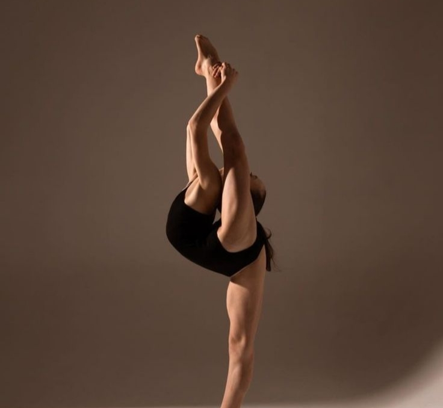

ПО РАЗМЕТКЕ

РАЗМЕТКА ПРОЕКТОВ ПО
ХУДОЖЕСТВЕННОЙ ГИМНАСТИКЕ
База знаний и инструкции
База знаний
Разметка проектов
ГЛОССАРИЙ
Термины и их сокращения
Термины и их сокращения
Технические термины
- ХГ – сокращение от «Художественная гимнастика».
- Кластер – это зона, в которой группируются метки (точки) со схожими скелетом действия. Кластеры создаются динамически с помощью алгоритмов группировки.
- Метка (точка) – это структурированный описательный идентификатор (набор характеристик), присвоенный фрагменту данных (в нашем случае, фрагменту видео).
- Таймкод – временная метка, в формате «мм:сс.мсмсмс».
- Фрагмент – отрезок, выделяемый на видео цветным боксом на протяжении всего времени выполнения действия и имеющий две временные метки: таймкод начала и таймкод конца. Фрагмент помимо временных меток содержит также описательную информацию о выполняемом гимнасткой действии: класс и название действия и чек-боксы.
- Действие – движение тела спортсменки (в том числе статичное), относящиеся к определенной группе действий.
- Класс действий – собирательный термин, характеризующий набор различных «действий», выполняемых гимнасткой во время выступления. К ним относятся: Техническое, Равновесие, Вращение, Прыжок, Преакробатический элемент, Вертикальное вращение, Динамический элемент с вращением R, Танцевальные шаги.
- Действие прервано – действие спортсменки, которое не было выполнено в полной мере согласно правилам художественной гимнастики в связи с потерей предмета, потерей равновесия / падением или другими причинами.
Спортивные термины
- Релеве – движение стопы опорной ноги, подъём на полу пальцы с отрывом пятки от пола.
- Турлян – медленный поворот вокруг себя на одной ноге без касания пола другой ногой осуществляемый за счет перемещения пятки при подъеме на релеве (не считается вращением).
- Плие – сгибание одной либо обеих ног / приседание на двух либо на одной ноге.
- Динамическое равновесие – выполняются плавными последовательными движениями с переходом одной формы в другую без остановки в любой части равновесия.
- Элемент – это минимальная, технически законченная единица движения, которая имеет четко описанную технику выполнения и официально зафиксированную стоимость в Таблицах правил Международной федерации гимнастики.
- Элементы DB – это Прыжки, Равновесия и Вращения.
- Элементы DA – технически сложная манипуляция с предметом, которая состоит из работы с предметом с выполнением во время нее минимум 2 критериев.
- Полупальцы – положение стопы, при котором спортсменка отрывает пятку от пола и стоит, опираясь исключительно на переднюю часть стопы опорной ноги: подушечку и пальцы.
ЭЛЕМЕНТЫ ТЕЛА
Равновесие, Вращение, Прыжок
Равновесие
Действие, выполняемое гимнасткой путем принятия статичной (фиксация в течение минимум 1 секунды) или динамической сложной формы на ограниченной площади опоры с сохранением баланса и эстетической чистоты позы. Равновесия могут выполняться на полупальцах, на полной стопе, на колене, на животе или груди. Границы фрагмента следует начинать с момента, когда гимнастка начинает подготовку к равновесию (делает подготовительный шаг или приседание) и закончить в момент, когда гимнастка выходит из формы и опускает ногу. Отметка «Действие прервано» ставится в случае: 1) если форма элемента имеет большое отклонение от формы (более 20°) одной или более частей тела; 2) если при выполнении равновесия полностью отсутствует замирание в форме (маховое движение); 3) если гимнастка потеряла равновесие (подскок/падение); 4) если гимнастка потеряла предмет.
Пассе (0,1)
- Пассе вперед: Спортсменка стоит на одной ноге (выпрямлена в колене) на полупальцах. Вторая нога согнута в колене и прижата пальцами к колену. Колено этой второй ноги уведено вперед. Тело выпрямлено вверх.
- Пассе в сторону: Спортсменка стоит на одной ноге (выпрямлена в колене) на полупальцах. Вторая нога согнута в колене и прижата пальцами к колену. Колено этой второй ноги уведено в сторону. Тело выпрямлено вверх.
Свободная нога вперёд
- Горизонтально вперед (0,1): Спортсменка стоит на одной ноге на полупальцах и держит другую ногу впереди на 90 градусов, коленка этой ноги согнута на 30 градусов.
- Горизонтально вперед выпрямленная (0,2): Обе ноги выпрямлены. Тело тянется вертикально вверх.
Передний шпагат
- С помощью (0,3): Стоя на одной ноге на полупальцах, держит рукой вторую ногу впереди, стопа выше головы. Угол 180+.
- Без помощи (0,5): Вторая нога вытянута вперед вверх, стопа выше головы. Не держит ногу руками.
Вращение
Вращательное движение тела гимнастки вокруг вертикальной оси, выполняемое с принятием определенной формы во время вращения. Вращения могут выполняться на полупальцах, на полной стопе, на животе или груди; на 180, 360 или более градусов. Отсчет числа и поворотных градусов вращения идет с момента принятия спортсменкой определенной формы. Границы фрагмента следует начинать с момента, когда гимнастка начинает подготовку к вращению и закончить в момент, когда гимнастка выходит из формы и прекращает вращение.
Базовые формы
- Пассе вперёд (0,1): Нога согнута, носок к колену, колено вперёд. Мин. 360°.
- Спиральный поворот «Тонно» (0,3): Прогиб назад → наклон вперёд, иллюзия спиральных волн. Мин. 360°.
Шпагаты
- Передний шпагат с помощью (0,3): Нога вперёд 180°+, захват рукой. Мин. 360°.
- Задний шпагат без помощи (0,5): Нога выше головы, без захвата. Мин. 360°.
Именные вращения
- Кабаева (КВ) (0,5): Нога вперёд 180°+, тело назад к бедру опорной ноги. Мин. 180°.
- Гизикова (GZ) (0,7): Нога вперёд 180°+ → выкрут в сторону → задний шпагат. Мин. 360°.
Прыжок
Сильное отталкивание одной или двумя ногами от пола с последующим выполнением сложной формы в воздухе. Прыжки бывают без поворота и с поворотом вокруг оси спортсменки; с и без смены ног в полете; с прогибом туловища назад и/или в кольцо. Границы фрагмента следует начинать с момента, когда гимнастка начинает подготовку к прыжку (разбег или подскок) и закончить в момент приземления.
Базовые прыжки
- Согнув ноги + поворот 360° (0,1): Ноги прижаты к телу, приземление на 2 ноги.
- Прямые ноги + поворот 720° (0,3): Ноги прямые, единая линия. Поворот 720°.
Шпагаты
- В шпагат (0,3): Одна нога вперёд, другая назад, 180°+. Тело вертикально.
- Зарипова (ZR) + наклон назад (0,7): Задняя согнута в кольцо, тело назад, касание головой бедра.
РАБОТА
С ПРЕДМЕТОМ
Мяч, обруч, булавы, лента, скакалка
В РАЗРАБОТКЕ
Здесь будет размещена информация о разметке элементов с предметами.
КРИТЕРИИ DA
Особенности разметки
Критерии элемента DA
Элемент DA — технически сложная манипуляция с предметом, при которой во время работы с предметом выполняются минимум 2 критерия из таблицы. Должны выполняться именно два критерия во время работы.
- Вне поля зрения: Работа с предметом в зонах за спиной/сбоку-сзади. (В больших перекатах / скольжении данный критерий засчитывается только если какая-либо часть работы выполняется в зоне «вне поля зрения»).
- Без помощи рук: Предмет движется самостоятельно — от импульса другой части тела или после начального импульса руки.
- Под ногой/ногами: Предмет движется самостоятельно под ногой или ногами гимнастки.
- Положение лёжа на полу: Опора на верхнюю часть тела (плечи, грудь или лопатки).
- Полная волна телом (W): Последовательное сокращение/расслабление всех мышц тела.
- Вращение вокруг своей оси: Минимум 360°. Трудность тела не может использоваться как элемент вращения.
Особый элемент DA: «Вертушка Шугуровой». Перекат обруча по полу → высокий прыжок с согнутыми ногами точно над вертикалью обруча → две стопы закручивают обруч на полу в вертикальное вращение.
ГИМНАСТКИ АВГУСТ
Общая информация
Основная информация
Описание проекта
Задание проекта: Определение и выделение всех выполняемых гимнасткой во время выступления отдельных действий (границы выступления, трудности тела, технические действия). Каждый элемент необходимо выделить отдельным фрагментом в соответствии с классом этого элемента.
Классы объектов разметки: Техническое, Равновесие, Вращение, Прыжок, Преакробатический элемент, Вертикальное вращение, Динамический элемент с вращением R, Танцевальные шаги.
Входные данные: Видео выступлений спортсменок.
Требования к выходным данным: Небольшие отрывки видео (фрагменты), выделенные цветными боксами и включающие выполнение гимнасткой одного отдельного действия. Фрагмент должен включать подготовку к выполнению действия, само действие и завершение его выполнения.
Основные шаги в разметке
Шаг 1: Определить границы выступления
Необходимо найти начало выступления. Следует ориентироваться на замирание спортсменки в определенной (статичной) позе в течение ~1 секунды и более. С этого момента, не захватывая подготовительные движения и ожидание начала музыки, следует начать протягивать фрагмент класса «Техническое» с названием «Выступление».
Шаг 2: Определить класс и название действия
Далее необходимо перейти к разметке действий гимнастки в пределах выделенного фрагмента. Для определения класса и названия действия необходимо внимательно просмотреть отрывок видео, определить основные характеристики действия, сравнить их с информацией в разделе «Объекты разметки» и выбрать класс действия.
Шаг 3: Выделить фрагмент
При выделении фрагмента необходимо включить действие в его границы полностью, не обрезая и не захватывания лишнее. Трудности тела могут выполняться подряд – сериями. Каждый элемент серии должен выделяться отдельным фрагментом вплотную, без свободного кадра между ними и без взаимного перекрытия.
Шаг 4: Отметить дополнительные характеристики
В данном проекте есть две дополнительные характеристики: «Действие прервано» (ошибка, потеря равновесия/предмета) и «Зум» (не видно часть тела из-за приближения камеры).
Шаг 5: Самопроверка
После того, как были размечены все действия гимнастки, необходимо перепроверить размеченное сквозным просмотром видео со сверкой по инструкции и чек-листу элементов.
ВАЛИДАЦИЯ
Проверка данных на карте кластеров
1. Основная информация
1.1. Описание проекта
Задание представляет собой карту распределения размеченных элементов на кластеры. Кластеры состоят из точек преимущественно одного цвета. Точка – это метка, содержащая следующие данные: фрагмент видео, видео со скелетом действия, класс и название действия, границы выполнения.
1.1.1. Задание проекта
Задача заключается в анализе карты кластеров и проверке данных, содержащихся в точке-метке. Точки-метки группируются в зоны по схожести скелетов. В точках одного цвета должны содержаться фрагменты с одинаковыми характеристиками. Точки-аномалии (другого цвета) имеют некорректные характеристики. Их необходимо проверить и исправить.
1.3. Основные шаги в разметке
Шаг 1: Выявить подозрительную точку
Ознакомьтесь с легендой цветов. Проведите визуальный осмотр карты. Ищите точки-аномалии – одиночные метки или небольшие группы, чей цвет резко отличается от цвета основного массива точек в данном кластере.
Шаг 2: Анализ и исправление содержимого точки
Оцените фрагмент видео. Если скелет зависает (замирает или искажается), поставьте соответствующую метку в блоке «Проверка сегмента». Определите класс и название выполненного действия. Обратите внимание на границы выполнения действия (тайминг).
Шаг 3: Исправление класса и/или названия
Выберите из выпадающего списка правильный класс объекта и название. Передвиньте маркеры начала и конца фрагмента на временной шкале так, чтобы они точно совпадали с началом и концом действия. Проверьте корректность галочек в чек-боксах.
Шаг 4: Сохранение изменений
Нажмите кнопку «Сохранить» в блоке «Проверка сегмента». Убедитесь, что точка на карте изменила свой цвет на соответствующий исправленному классу.
Шаг 5: Переход к следующей точке и итерация
Повторяйте цикл «Выявление → Просмотр видео/скелета → Исправление → Сохранение». Периодически отдаляйте карту для оценки общей картины.
Шаг 6: Завершение работы
Работа завершена, когда каждый крупный кластер представляет собой зону с точками одного цвета, а все изолированные точки других цветов переклассифицированы или обоснованы.
ИСТОЧНИКИ
Благодарности
Авторство материалов
-
Иконка «Главная»
Главная кнопка иконки от icon_small - Flaticon -
Иконка «Элементы тела» (Гимнастка)
Гимнастка иконки от DinosoftLabs - Flaticon -
Иконка «Работа с предметом»
Пилатес иконки от Yogi Aprelliyanto - Flaticon -
Иконка «Интеллектуальная собственность» (Источники)
Интеллектуальная собственность иконки от Arkinasi - Flaticon -
Иконка «База знаний»
База знаний иконки от HideMaru - Flaticon -
Иконка «Разметка проектов» (Контрольный список)
Контрольный список иконки от Iamkikirizky - Flaticon -
Иконка «Глоссарий» (Словарь)
Словарь иконки от Magnific - Flaticon -
Иконка «Гимнастки август»
Поза иконки от DinosoftLabs - Flaticon -
Иконка «Валидация» (Контроль качества)
Контроль качества иконки от zero_wing - Flaticon
© 2026 Справочник по разметке гимнасток
РАЗМЕТКА С ПРЕДМЕТОМ
В разработке
ПОДГОТОВКА ВЫСТУПЛЕНИЙ
В разработке
ГИМНАСТИКА ПРОВЕРКА
В разработке